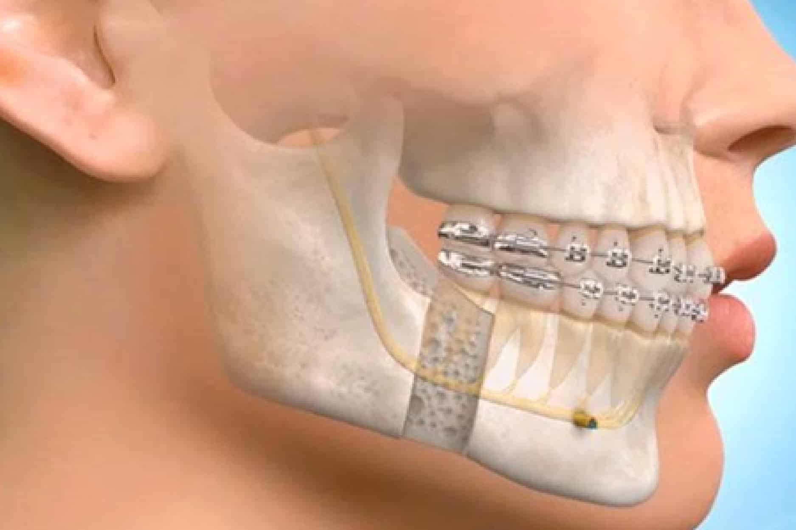

Oral Surgery: Procedure, Benefits, and Care

What is oral surgery?
Oral surgery is a broad term for any operation performed on your teeth, gums, jaw or surrounding oral and facial structures. It includes a wide range of procedures, including teeth extractions, dental bone grafts, periodontal (gum) grafts and corrective jaw surgery.
Why is oral surgery performed?
You could need oral surgery for a number of reasons. Your dentist might recommend it if you have:
- Extensive tooth decay.
- Badly Broken Teeth
- Gum Disease
- Impacted Teeth
- Missing Teeth
- Bone loss In Your Jaw
- Sleep Apnea
- Oral Cancer
- Benign Oral Pathology
- Temporomandibular Joint Disorders
What are the different types of oral surgery?
There are several types of oral surgery procedures performed each year. Some of the most common include tooth extraction, dental bone grafts, dental implants, periodontal surgery, corrective jaw surgery, sleep apnea surgery and cleft lip and palate repair.
- Tooth extraction
The most common type of oral surgery is tooth extraction (tooth removal). An extraction might be recommended if you have severe tooth decay, gum disease (periodontitis), dental trauma or wisdom teeth complications. Sometimes tooth extractions are performed to prepare you for dentures or other prosthetic devices.
Most dentists prefer to save natural teeth when possible, but sometimes extractions are necessary to preserve your overall oral health. Additionally, many dentists recommend wisdom tooth extraction as a preventative measure to reduce your risk for cavities, bone loss and other problems.
- Dental bone graft
A dental bone graft is necessary when bone loss has occurred in your jaw. There are a couple of reasons why this may occur. When your natural teeth are present, the roots stimulate the nerves in your jaw. This signals your brain to send nutrients to your jaw, keeping it strong and healthy. If a tooth has been missing for some time, bone deterioration can occur in that area because there are no roots to stimulate the nerves. A dental bone graft restores volume and density in your jawbone so that dental implants can be placed later on.
Sometimes, your provider might place a bone graft during periodontal surgery. Advanced gum disease can cause the bone around your teeth to erode. A bone graft reduces mobility and provides a solid foundation, keeping your teeth strong and healthy.
- Dental implants
Dental implants are widely considered the most reliable and longest-lasting teeth replacement option available. These small threaded posts — made of medical-grade titanium or zirconia — are embedded into your jaw to replace missing teeth roots. Once the implants are healed, they can be restored with dental crowns, dental bridges or dentures.
- Periodontal surgery
If you have moderate or severe periodontitis, a gum specialist may recommend gum disease treatment. During this procedure, incisions are made along your gum line and the tissue is temporarily moved back away from your teeth. Your surgeon will then clean your teeth roots, flushing away plaque and bacteria that have accumulated under your gums. Finally, the gum tissue is repositioned and sutured into place.
Sometimes, gum recession can occur as a result of periodontitis. In these instances, you may need a gum graft. During this procedure, your surgeon reinforces the area of tissue loss with donor tissue. This tissue may be taken from the roof of your mouth or purchased at a certified tissue bank.
- Corrective jaw surgery
Corrective jaw surgery — also called orthognathic surgery — addresses skeletal abnormalities of your jaw bones. This procedure may be recommended to improve chewing function, correct misalignment or address facial imbalances. Corrective jaw surgery is also used to ease pain caused by TMJ dysfunction (TMD).
Who performs oral surgery?
An oral and maxillofacial surgeon performs surgery on the mouth, jaw and face. A periodontist, or gum specialist, performs surgery on the gums and bones that support your teeth. Both oral surgeons and periodontists must undergo three to four years of additional training after they graduate from dental school.